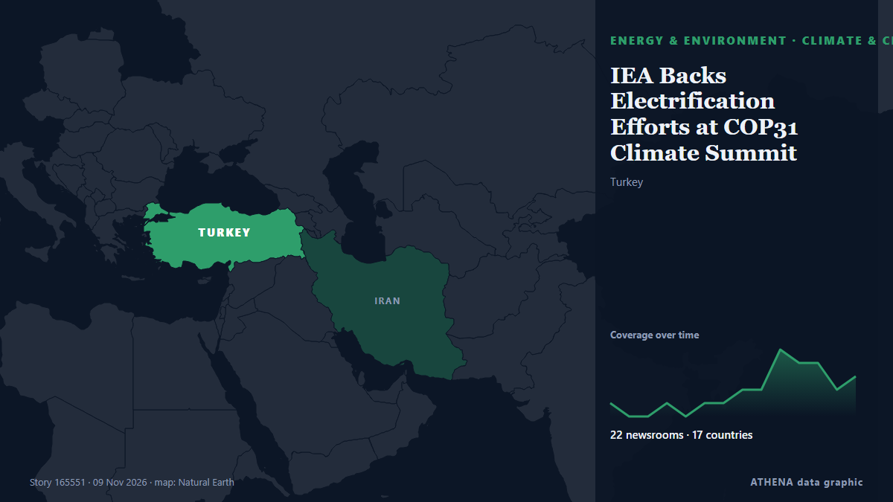

IEA Backs Electrification Efforts at COP31 Climate Summit

The International Energy Agency (IEA) will be pushing for faster and wider electrification at COP31 starting on Monday in Antalya, Turkey, as leaders and policymakers gather for the climate summit… de OilPrice.com
Relayé de façon indépendante par 24 médias dans 17 pays depuis le 9 nov. ; premier à l'annoncer : Cyprus Mail ; la couverture faiblit. ATHENA juge le risque modéré (3.4/10), surtout en raison de la gravité des dommages décrits et de sa portée géographique et sectorielle. La confiance est de 91 % (élevée) : 24 médias indépendants le confirment, avec une fiabilité moyenne des sources de 73 %. Médias par pays : Royaume-Uni (5), Chypre (3), États-Unis (3). Couverture : du 9 nov. au 10 nov., 32 heures.
Pourquoi c'est important: Les évolutions de l'énergie et des ressources pèsent sur les prix des carburants et de l'électricité, la sécurité d'approvisionnement et les engagements climatiques.
Ce qui a changé : 23 nouveaux articles de 19 rédactions dans les 24 heures jusqu'au 10 nov..
Premier titre : Will realism shape the COP31 outcome?
Les titres sont affichés en anglais, tels que publiés.
Comment lire cette page
- Ce que vous lisez
- 24 médias dans 17 pays ont rapporté cet événement. Les reportages ci-dessous sont classés selon leur ordre de parution ; chaque titre ouvre l'article original. ATHENA n'écrit aucun reportage.
- Notre lecture
- Pour mémoire — Les reportages décrivent une affaire terminée, intérieure, commerciale ou personnelle. Nous la consignons pour que vous voyiez qui l'a rapportée et quand. Nous ne suivons pas ici de risque de conflit plus large.
- Quelle base de preuves
- Correcte Plusieurs médias indépendants concordent, mais le tableau peut encore changer.
Après retrait des doublons, des éléments hors sujet et périmés, 18 des 29 reportages listés sont retenus ; 86 % des titres correspondent à l'événement.
- Ce que cela ne veut pas dire
- ATHENA mesure la façon dont un événement est rapporté, pas sa véracité. Ce n'est ni une prévision, ni un jugement sur qui a raison, ni un conseil.
- Ce qui la changerait
- Des reportages d'autres médias indépendants montrant une évolution différente, ou une confirmation ou un démenti ferme d'une source officielle.
Lecture R2 · actualisée à chaque mise à jour de cette page. ATHENA n'a pas encore publié de bilan de ces lectures ; il sera lié ici le moment venu.
En un coup d'œil
Sélectionné, noté et rédigé par la méthodologie publiée d'ATHENA. Aucun rédacteur n'intervient sur un événement en particulier. Comment il est produit ›
| 09 Nov 02:24 UTC | 1 |
|---|---|
| 09 Nov 04:24 UTC | 1 |
| 09 Nov 06:24 UTC | 1 |
| 09 Nov 08:24 UTC | 3 |
| 09 Nov 10:24 UTC | 7 |
| 09 Nov 12:24 UTC | 8 |
| 09 Nov 14:24 UTC | 5 |
| 09 Nov 16:24 UTC | 0 |
| 09 Nov 18:24 UTC | 0 |
| 09 Nov 20:24 UTC | 0 |
| 09 Nov 22:24 UTC | 0 |
| 10 Nov 00:24 UTC | 0 |
| 10 Nov 02:24 UTC | 1 |
| 10 Nov 04:24 UTC | 1 |
| 10 Nov 06:24 UTC | 0 |
| 10 Nov 08:24 UTC | 1 |
| 09 Nov 03:33 UTC | 3.2 |
|---|---|
| 09 Nov 13:40 UTC | 4.0 |
| 10 Nov 10:08 UTC | 3.4 |
Pourquoi ces chiffres
Importance
Risque
Confiance
La couverture : qui l'a annoncé, et quand
titre tel que publié · ouvre l'original- Cyprus Mail · ChypreWill realism shape the COP31 outcome?
- Cyprus Mail · ChypreWar, AI and US absence cast shadow over COP31 climate talks
- Carbon Brief · Royaume-UniQ&A: What is the Belém-Antalya mechanism for a ‘just transition’?
- CBC News (alternative feed) · CanadaCanada's credibility on the line at summit as it defends fossil fuel expansion while trumpeting clean energy
- MIT Technology Review · États-UnisThe climate case for AI has not been made
- NPR · États-UnisU.N. climate talks begin today. Here are 3 things to know
- France 24 English · FranceCOP31 opens with leaders under pressure to tackle climate crisis
- Premium Times · NigeriaANALYSIS: COP31 puts climate finance, fossil fuel transition, energy ambitions to test
- Oman Observer · OmanCOP31 summit leaders urge world to move faster on climate
- The Rio Times · BrésilTurkey Opens UN Climate Talks, Leaders Next
- Daily Maverick · Afrique du SudCOP31 summit leaders urge world to “move faster” on climate
- MyJoyOnline · GhanaCOP31 opens under Super El Niño threat as developing nations demand urgent action on climate finance
- Cyprus Mail · ChypreCOP31 to open in Turkey, with climate goals under pressure from war and AI
- OilPrice.com · Royaume-UniIEA Backs Electrification Efforts at COP31 Climate Summit
- BusinessWorld · PhilippinesClimate finance, tech aid top PHL agenda at Turkey COP31
- RTÉ News · Irlande'We have to act now' - views from the queue at COP31
- Phys.org · Royaume-UniCOP31 opens with leaders under pressure to tackle climate crisis
- France 24 English · FranceCOP31: A focus on electrification as extreme weather events shake the world
- Anadolu Agency (English) · Turquie102 leaders from 6 continents to attend COP31 climate summit in Türkiye
- Just Security · États-UnisWhat Experts Will Be Watching as COP31 Gets Underway
- Club of Mozambique · MozambiqueCOP31 summit leaders urge world to move faster on climate
- France 24 English · FranceCOP31: Betting on electricity to break the climate deadlock
- ABC News Australia · AustralieCOP31 summit targets major electrification push as 1.5C goal slips away
- OilPrice.com · Royaume-UniCOP31 Opens in Antalya With a UN Push for Faster Climate Action
- NL Times · Pays-BasDutch PM Jetten to skip climate summit in Türkiye to focus on getting tax plan support
- The Conversation (global) · AustralieThe Cop31 climate summit is betting on electrification – but still needs a plan to ditch fossil fuels
- SABC News · Afrique du SudTurkey to push global electrification goal, but will it be green?
- RTÉ News · IrlandeCOP31 host Turkey to push global electrification goal
- Power Technology · Royaume-UniUN climate talks in Türkiye target 35% electrification by 2035